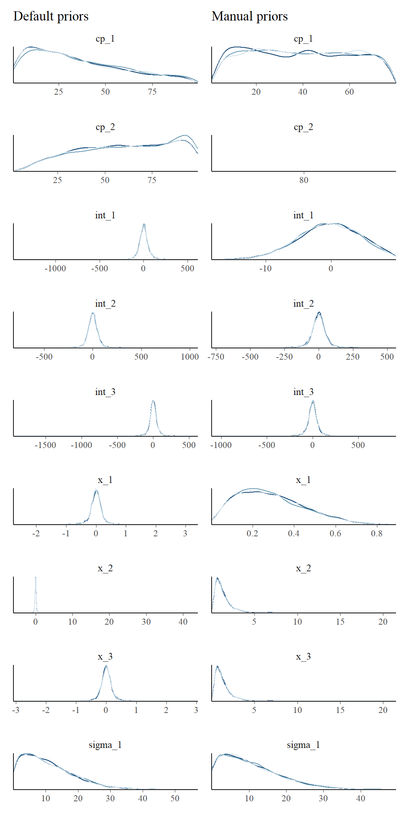

Working with priors in mcp
Jonas Kristoffer Lindeløv
2019-12-02
Source:vignettes/priors.Rmd
priors.RmdSetting a prior
mcp takes priors in the form of a named list. The names are the parameter names, and the values are JAGS code. Here is a fairly complicated example, just to get enough priors to demonstrate the various ways priors can be used:
segments = list(
y ~ 1 + x, # int_1 + x_1
~ 1 + x, # cp_1, int_2, and x_2
~ 1 + x # cp_2
)
prior = list(
int_1 = "dnorm(0, 5) T(, 10)", # Intercept; less than 10
x_1 = "dbeta(2, 5)", # slope: beta with right skew
cp_1 = "dunif(MINX, cp_2)", # change point between smallest x and cp_2
x_2 = "dt(0, 1, 3) T(x_1, )", # slope 2 > slope 1 and t-distributed
cp_2 = 80, # A constant (set; not estimated)
x_3 = "x_2" # continue same slope
# int_2 and int_3 not specified. Use default.
)The values are JAGS code, so all JAGS distributions are allowed. These also include gamma, dt, cauchy, and many others. See the JAGS user manual for more details. The parameterization of the distributions are identical to standard R. Use SD when you specify priors for dnorm, dt, dlogis, etc. mcp converts to precision for JAGS under the hood via the sd_to_prec() function (prec = 1 / sd^2), so you don’t have to worry about it. You can see the effects of this conversion by inspecting the difference between fit$prior (using SD) and fit$jags_code (using precision).
Other notes:
Order restriction is automatically applied to change points (
cp_*parameters) using truncation (e.g.,T(cp_1, )) so that they are in the correct order on the x-axis. You can override this behavior by definingT()ordunifyourself (dunifcannot be truncated), in which casemcpwon’t do further.In addition to the model parameters,
MINX(minimum x-value),MAXX(maximum x-value),SDX,MEANX,MINY,MAXY,MEANY, andSDYare also available when you set priors. They are used to set uninformative default priors. Strictly speaking, this is “illegal”, but it does ensure that estimation works reasonably across many orders of magnitude.You can fix any parameter to a specific value. Simply set it to a numerical value (as
cp_2above). A constant is a 100% prior belief in that value, and it will therefore not be estimated.You can also equate one variable with another (
x_3 = "x_2"above). You would usually do this to share parameters across segments, but you can be creative and do something likex_3 = "x_2 + 5 - cp_1/10"if you want. In any case, it will lead to one less parameter being estimated, i.e., one less free parameter.
Let us see the priors after running them through mcp and compare to the default priors:
library(mcp)
options(mc.cores = 3) # Speed up sampling!
empty_manual = mcp(segments, prior = prior, sample = FALSE)
empty_default = mcp(segments, sample = FALSE)
# Look at fit$prior and show them side-by-side
cbind(manual = empty_manual$prior, default = empty_default$prior)## manual default
## cp_1 "dunif(MINX, cp_2)" "dunif(MINX, MAXX)"
## cp_2 80 "dunif(cp_1, MAXX)"
## int_1 "dnorm(0, 5) T(, 10)" "dt(0, 3 * SDY, 3)"
## int_2 "dt(0, 3 * SDY, 3)" "dt(0, 3 * SDY, 3)"
## int_3 "dt(0, 3 * SDY, 3)" "dt(0, 3 * SDY, 3)"
## x_1 "dbeta(2, 5)" "dt(0, SDY / (MAXX - MINX), 3)"
## x_2 "dt(0, 1, 3) T(x_1, )" "dt(0, SDY / (MAXX - MINX), 3)"
## x_3 "x_2" "dt(0, SDY / (MAXX - MINX), 3)"
## sigma_1 "dnorm(0, SDY) T(0, )" "dnorm(0, SDY) T(0, )"Now, let’s simulate some data that from the model specified by segments. The following data “violates” the manual priors so as to show their effect.
data = tibble::tibble(
x = runif(200, 0, 100), # 200 datapoints between 0 and 100
y = empty_default$simulate(x,
int_1 = 20, int_2 = 30, int_3 = 30, # intercepts
x_1 = -0.5, x_2 = 0.5, x_3 = 0, # slopes
cp_1 = 35, cp_2 = 70, # change points
sigma = 5)
)Sample and plot the fits:
library(ggplot2)
plot_default = plot(fit_default) + ggtitle("Default priors")
plot_manual = plot(fit_manual) + ggtitle("Manual priors")
library(patchwork)
plot_default + plot_manual
We see the effects of the priors.
- The intercept
int_1was truncated to be below 10. - The slope
x_1is bound to be non-negative (becausedbeta). - The slopes
x_2andx_3were forced to be identical. - The change point
cp_2was a constant, so there is no uncertainty there.
Of course, it will usually be the other way around: setting priors manually will often serve to sample the “correct” posterior.
Default priors on change points
Change points have to be ordered from left (cp_1) to right (cp_2+). This order restriction is enforced through the priors. The first change point defaults to cp_1 = dunif(MINX, MAXX). In other words, the change point has to happen in the observed range of x, but it is equally probable across this range. The second change point defaults to cp_2 = dunif(cp_1, MAXX), i.e., it has to occur in the observed range AND be greater than cp_1, and so forth for cp_3 (greater than cp_2), etc.
One side effect is that later change points have greater prior probability density towards the right side of the x-axis. You can see this if you sample the priors without data (fit = mcp(segments, data, sample = "prior")) and summarise the estimates (summary(fit)). In practice, this “bias” is so weak that it takes a combination of many change points and few data for it to impact the posterior in any noticeable way.
If you want more informed priors on the change point location, i.e., cp_2 = "dnorm(40, 10), mcp adds this order restriction by adding cp_2 = "dnorm(40, 10) T(cp_1, MAXX). You can avoid this behavior by explicitly doing an “empty” truncation yourself, e.g., cp_2 = "dnorm(40, 10) T(,). However, the model may fail to sample the correct posterior in samples where order restriction is not kept.
Default priors on linear predictors
OBS: These priors are very likely to change in versions beyond mcp 0.1.
You can see the default priors for the gaussian() family in the previous example. They are similar to the brms default priors, i.e., t-distributed around mean = 0 with a standard deviation that scales with the data.
This means that there will be some “shrinkage” towards a mean and SD of zero for all parameters, especially for parameters with a large mean and a small SD.
The slopes are scaled as if it changed +/- 1 SD through the entire x-axis. This too will be insufficient for very steep slopes, i.e., if there are many change points on x.
See the family-specific articles for more information about the priors for other families:
-
vignette("binomial")- also relevant forbernoulli vignette("poisson")
Prior predictive checks
Prior predictive checks is a great way to ensure that the priors are meaningful. Simply set sample = "prior". Let us do it for the two sets of priors defined previously in this article, to see their different prior predictive space.
# Sample priors
fit_pp_manual = mcp(segments, data, prior, sample = "prior")
fit_pp_default = mcp(segments, data, sample = "prior")
# Plot it
plot_pp_manual = plot(fit_pp_manual, lines = 100) + ylim(c(-400, 400)) + ggtitle("Manual prior")
plot_pp_default = plot(fit_pp_default, lines = 100) + ylim(c(-400, 400)) + ggtitle("Default prior")
plot_pp_manual + plot_pp_default # using patchwork
You can see how the manual priors are more dense to the left, and the “concerted” change at x = 80.
JAGS code
Here is the JAGS code for fit_manual:
##
## model {
## # Priors for population-level effects
## cp_1 ~ dunif(MINX, cp_2)
## cp_2 = 80 # Fixed
## int_1 ~ dnorm(0, 1/(5)^2) T(, 10)
## int_2 ~ dt(0, 1/(3*SDY)^2, 3)
## int_3 ~ dt(0, 1/(3*SDY)^2, 3)
## x_1 ~ dbeta(2, 5)
## x_2 ~ dt(0, 1/(1)^2, 3) T(x_1, )
## x_3 = x_2 # Fixed
## sigma_1 ~ dnorm(0, 1/(SDY)^2) T(0, )
## cp_0 = -10^100 # mcp helper value; minus infinity
## cp_3 = 10^100 # mcp helper value; plus infinity
##
##
## # Model and likelihood
## for (i_ in 1:length(x)) {
## X_1_[i_] = min(x[i_], cp_1)
## X_2_[i_] = min(x[i_], cp_2) - cp_1
## X_3_[i_] = min(x[i_], cp_3) - cp_2
##
## # Fitted value
## y_[i_] =
##
## # Segment 1: y ~ 1 + x
## (x[i_] >= cp_0) * (x[i_] < cp_1) * int_1 +
## (x[i_] >= cp_0) * (x[i_] < cp_1) * x_1 * X_1_[i_] +
##
## # Segment 2: y ~ 1 ~ 1 + x
## (x[i_] >= cp_1) * (x[i_] < cp_2) * int_2 +
## (x[i_] >= cp_1) * (x[i_] < cp_2) * x_2 * X_2_[i_] +
##
## # Segment 3: y ~ 1 ~ 1 + x
## (x[i_] >= cp_2) * int_3 +
## (x[i_] >= cp_2) * x_3 * X_3_[i_]
##
## # Fitted standard deviation
## sigma_[i_] =
## (x[i_] >= cp_0) * sigma_1
##
## # Likelihood and log-density for family = gaussian()
## y[i_] ~ dnorm(y_[i_], 1 / sigma_[i_]^2)
## loglik_[i_] = logdensity.norm(y[i_], y_[i_], 1 / sigma_[i_]^2)
## }
## }